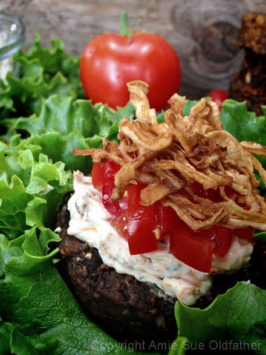

All American Sun-dried Tomato and Pesto Nutburger
Well if this doesn’t look like the classic American dinner plate, I don’t know what does. Would you believe that everything on this plate is raw, vegan, gluten-free and dairy-free?!
To me, this plate resembles a concept that I call comfort food. All of us have our own version of such a meal, usually stemming from fond memories of our past. There are moments in our life when we are sick, tired, or far from home, and it is during those times that the cravings for comfort foods exert a strong feeling upon us.
We yearn for the gastronomic equivalent of a warm sweater, a kiss on the forehead, or a favorite blanket. Mom’s home cooked spaghetti might bring comfort to you or perhaps a cheeseburger with a side of potato chips. Hopefully, for you my readers, a slice of Raw Old-Fashioned Apply Pie with Buttery Walnut Crust or a plate of Nomato Spaghetti with Vegan Meatballs (nut free) now brings you comfort.
When I look back, through my childhood I had a thing for blankets, but not just any blanket… hospital bed blankets. Lol As a young’n, I was a frequent guest of hospitals (I should have collected reward points ) and each time I left, I took a hospital bed blanket. I still have all of them, the first one I got is literally paper thin and is safely tucked away in my cedar chest. I guess when they brought them to my bed, they were warm and I would be swaddled up in them. A warm hug of comfort in an impersonal place.
The chips that you see in the photos… are raw/vegan and I hope to be sharing that recipe soon. The rest of the recipe is a mashup of various recipes that I have been creating. I hope this inspires you and adds some variety to your weekly menu. Enjoy!
Recipe mashup:
Burger:
Toppings:
Preparation:
- Combine equal amounts of Sun-Dried Tomato Pesto and Raw Ground Nutburger.
- Taste test and adjust spices if need be. We found it just right as is.
- Create 1/4 cup patties and place on the mesh sheet that comes with the dehydrator.
- Dry at 145 degrees (F) for 1 hour, then reduce to 115 degrees (F) and continue to dry for 4-6 hours. You can remove them at any stage, depends on how moist you want them.
- Top and enjoy!
Culinary Explanations:
- Why do I start the dehydrator at 145 degrees (F)? Click (here) to learn the reason behind this.
- When working with fresh ingredients, it is important to taste test as you build a recipe. Learn why (here).
- Don’t own a dehydrator? Learn how to use your oven (here). I do however truly believe that it is a worthwhile investment. Click (here) to learn what I use.
The burgers will darken quite a bit after dehydrating them… just so you are aware.

© AmieSue.com